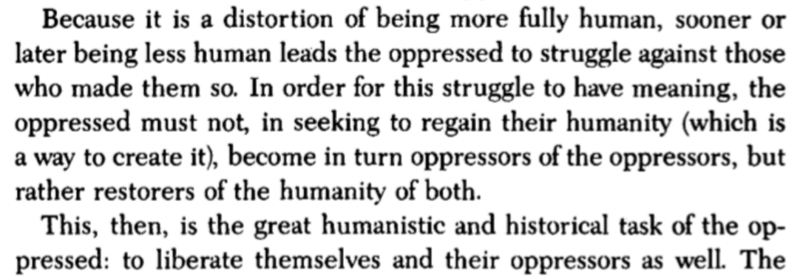
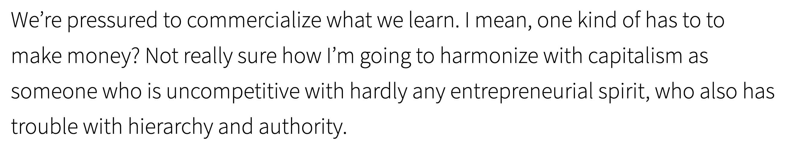

08.05.20
Post-metaphor
tendency to compare to things rather than ideas, processes
teachers often analogizing: is it actually helpful?
a typeface is not a metaphor
08.04.20
Middle space
to exist in the air between people, not helium-minded all the way up in earth’s atmosphere
—

from Pedagogy of the Oppressed — Paulo Freire
I read the above statement back in June after being introduced to the reading via Modernity + Coloniality. The oppressed becoming the oppressors is so common. I want the notion of the oppressed liberating themselves and their oppressors to be true, but it feels so impossible.
08.03.20
I read Teaching as a Subversive Activity by Neil Postman & Charles Weingartner in the last semester of undergrad (about a year and a half ago) after hearing it mentioned in a podcast with Laurel Schwulst. It is a book students should consider reading (good teachers know they are students as well). I returned to my notes on the book after a friend brought up ideas about pursuing anti-institutional alternatives for design education.
Children enter school as question marks and leave as periods.
From Chapter 5 of Teaching as a Subversive Activity
For a while, I’ve realized, I have been thinking of not approaching design as an essay, to not assert or prove a point or problem solve, but to allow it as a process for exploration and discovering insights. There is a deficiency in learning how to ask questions and what questions to ask. As malleable and not wholly scientific as design is, it is insidious to think that it is a practice of conclusions. Part of the issue lies in having to give designers leverage and validation, but we must admit that we do not know everything. We can post-rationalize til eternity but what are we reasserting by doing that? Why do we have to convince ourselves to such a degree? Is it okay to accept uncertainty, to admit genuinely and not dismissively “I do not know”? What is intuition and “feels right”? Do we assert and create culture or reflect it? Are we humble, or competitive supremacists?
—
I am going to try reading this book again, or at least revisit Chapter 5, titled “What is worth knowing?” as it is asks a series of questions that I answered back in 2019 and would like to answer again now. These are some of the potent questions, along with my answers from March 2019:
-
What do you worry about most?
Submitting to capitalist requirements, feeling defeated and meaningless. Building ingenuine networks just for me. Misleading someone. People unable to be independent and secure their own backbone.
-
What are the causes of your worries?
The professionalization of curricula, professors with blasé attitudes who reinforce the client mindset over individual expression. Templated advice that reinforces convention, doesn’t question truth. Lack of depth in relationships. Insecure people with no passion or opinion.
-
What bothers you most about adults? Why?
Those with no opinion or desire to reconsider; they perpetuate conventional systems or hold an authoritarian stance that doesn’t support different perspectives. The neutral are also discouraging; they seem to not care; if they have no exigence, how can you? Ones who don’t go for ideas: stagnant. Those who don’t encourage or push or just fucking care.
-
What, if anything, seems to you to be worth dying for?
Liberation
-
How did you come to believe this?
It is easier to fly weightless.
-
What seems worth living for?
Witnessing where all the good people go and what they do. The growth of deep relationships. The potential of finding a genuine group.
-
How did you come to believe this?
I am getting closer to it every day. The things I make say more than I ever will be able to, as well as the actions of good-willed people. Without them, I would not be here. Each day I am becoming less timid, especially by engaging with people who are bold and honest, but not sensationalists. They are remarkable in the basic desirable traits, which are unfortunately hard to come by. And you can only grow by crossing with new perspectives and accepting support. Hearing of people’s journeys is always a source of optimism.
08.02.20
Took a while, but after giving a casual and not well practiced/prepared portfolio share on Zoom yesterday, I was motivated to finish configuring a new reference repository as it’s a really nice way to document interests and thoughts. I included a screenshot from this 2018 entry:

This is still true.
I start this repository with that as a reminder of non-linearity.
—
Currently I am in a Display Type class through Type@Cooper. The class is usually in person in NYC, but due to the pandemic it’s online. And because racial injustice has come back to the fore, the instructor was successfully able to fundraise multiple scholarships for BIPOC. So there I am as a non-binary Vietnamese recent first-gen grad sometimes-freelancer grocery store worker from Bentonville, Arkansas who currently lives in Minneapolis.
I am grappling with what this all means. What is my identity? What does it mean to be who I am and to have been enabled to go to a prestigious school via needs-based scholarship and to jump into the design school sans portfolio? To have immigrant conservative parents from the rural South Vietnam, a mother who stopped school at middle school and a father who went through to high school, still chasing the so called American dream, their goals largely influenced by their privileged white Southern customers in their former nail salon? Whererin the strongest genuine tie I have to whatever my perspective of Vietnamese culture is through food? Does it really make sense to mine the visual culture of Vietnam, contemporary and historical, when I am not really part of it? When I was not taught written Vietnamese? When I was naturally drawn to the aesthetics of modernism since youth, ignorant of the manifestos, capitalism, industrialism, colonialism behind it all?
Part of the struggle is how different every Asian American is. And how new Asian America is. There is a history, but do I come from it? Rather I became a part of it the moment I was born. Is it valid to just create and to shape that history now? To not look back since I don’t really come from any of it?
Maybe that all sounds super ignorant. Bentonville, Arkansas is not Vietnamese-American populated like Texas or Cali. The Vietnamese restaurants there end up assimilating to the tastes of Ozarkians: cabin themed, gentrified outdoorsmanship. But what say of me given my education and draw to the modernist works of Europeans? I am not just as white-washed? But what else would I be? The best I can say is that I am just Vanna. An accumulation. Representative of what?
Is existing enough? Must everything be argued? I cannot rationalize the entirety of the self. “I think therefore I am” is a privileged statement.
I was momentarily is a short-term Visual Criticism & Theory class (until realizing I overloaded myself with work, more work, and school), but one of the first exercises we did was writing down how we are privileged and not privileged. It’s not so easily categorized, but dependent on context and who we are in proximity to given the moment. Largely I exist in the middle space, which means a certain level of empathy but also power. I am figuring out how to make the best of that to give leverage to others. So often in the past I simply lead by example, somewhat alone. Asking questions but unsure if anyone else truly pondered them too. I don’t know if continuing to do as that is enough, if sharing is enough. One of my biggest weaknesses is collaboration. Why is that? I also rely on the nicety of others to spread the word about me. I do not assert or market myself really. As I don’t really want to scale or submit myself. I guess that large part of that is that I am super isolated and not part of a community. Without that there is no horizontality but an insidious amount of individuality.
Well this is what happens when I put off a reference repository. A dam breaks.